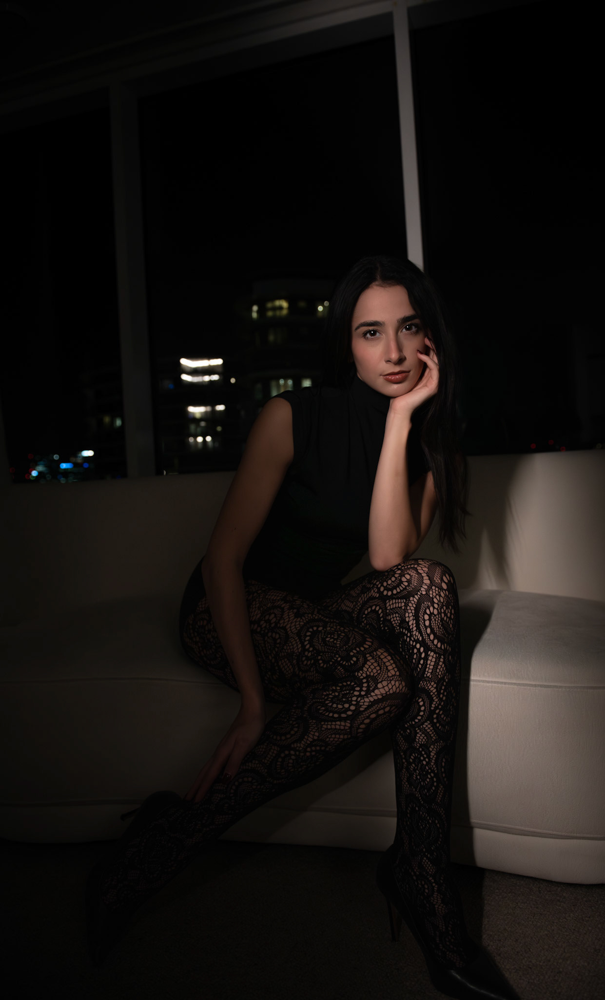

Fashion & editorial photography
Davide Solla
Cinematic portraits and fashion narratives shaped with atmosphere, colour, and emotional precision.
Studio point of view
A fashion image should hold a room quietly: controlled light, expressive styling, and a subject who feels magnetic without being over-explained.
Selected editorials
Portraits, beauty stories, and cinematic fashion work.
Fine art
Self-produced studies in beauty, fracture, and transformation.
Available as large-format, gallery-quality prints for private collectors, interiors, and curated spaces.
About
London-based, Naples-born, working between cinematic instinct and studio discipline.
Davide Solla creates portraits and conceptual editorials that explore identity, beauty, and transformation. His work blends carefully shaped light with narrative depth, producing images that feel atmospheric, symbolic, and emotionally resonant.
Available for fashion editorials, beauty campaigns, model portfolios, portrait commissions, and selected creative collaborations.

Commissions
For bookings, editorials, and collaborations.
Share a brief note about the project, timeline, location, and the mood you want to create.
Instagram